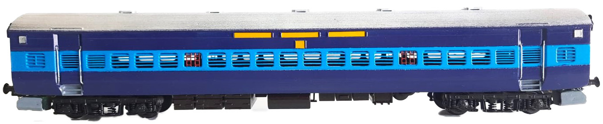
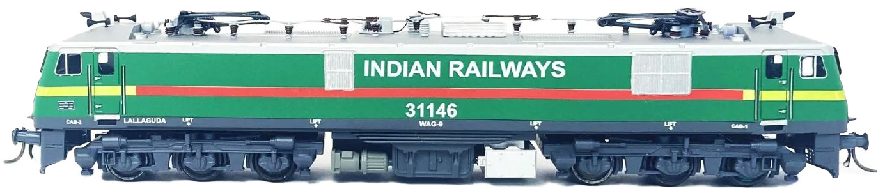

| Time From | Time To | Duration (sec) | From Speed (kmph) | To Speed (kmph) | Throttle | Distance (m) |
|---|---|---|---|---|---|---|
| 01:36:13 | 01:36:35 | 22 | 0 | 15 | TE | 46 |
| 01:36:36 | 01:36:51 | 16 | 15 | 17 | TE | 72 |
| 01:36:52 | 01:38:38 | 107 | 17 | 10 | Coasting | 376 |
| 01:38:39 | 01:38:58 | 20 | 10 | 22 | TE | 109 |
| 01:38:59 | 01:39:03 | 5 | 22 | 15 | Braking | 26 |
| 01:39:04 | 01:39:49 | 46 | 15 | 0 | TE | 117 |
| TOTAL | 216 | 746 | ||||


Train started at 01:36:13 from MURI yard with Throttle in TE position.
At 01:38:54, locomotive crossed the derailment point safely at 22 kmph.
At 01:39:12, Coach No. 3 rear trolley derailed while crossing the same point at 12 kmph.
Coach No. 3 rear trolley was dragged for 87 meters after derailment before train stopped.
A 9 meter parting occurred between Coach 3 and Coach 4 after the incident.